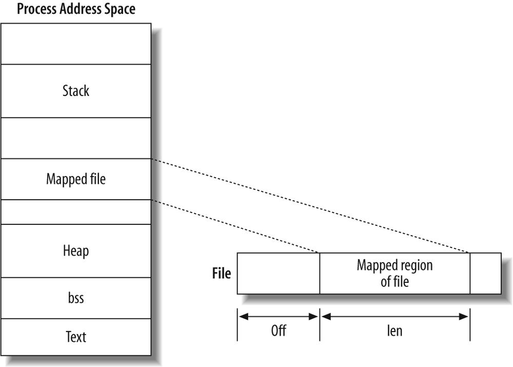

物理内存：VMO 对象
VMO 简介
根据文档梳理 VMO 的主要特性
虚拟拟内存对象（Virtual Memory Objects， VMO）代表一组物理内存页面，或 潜在的页面（将根据需要延迟创建/填充）。
它们可以通过 zx_vmar_map()被映射到一个进程（Process）的地址空间，也可通过 zx_vmar_unmap()来解除映射。可以使用zx_vmar_protect()来调整映射页面的权限。
也可以直接使用zx_vmo_read()来读取VMO和通过使用 zx_vmo_write()来写入 VMO。因此，通过诸如“创建 VMO，将数据集写入其中，然后将其交给另一个进程使用”等一次性（one-shot ）操作，可以避免将它们映射到地址空间的开销。
实现 VMO 对象框架
实现 VmObject 结构，其中定义 VmObjectTrait 接口，并提供三个具体实现 Paged, Physical, Slice
VmObject 结构体
#![allow(unused)] fn main() { // vm/vmo/mod.rs pub struct VmObject { base: KObjectBase, resizable: bool, trait_: Arc<dyn VMObjectTrait>, inner: Mutex<VmObjectInner>, } impl_kobject!(VmObject); #[derive(Default)] struct VmObjectInner { parent: Weak<VmObject>, children: Vec<Weak<VmObject>>, mapping_count: usize, content_size: usize, } }
trait_ 指向实现了 VMObjectTrait 的对象，它由三个具体实现，分别是 VMObjectPage, VMObjectPhysical, VMObjectSlice。VMObjectPaged 是按页分配内存，VMObjectSlice 主要用于共享内存，VMObjectPhysical 在 zCore-Tutorial 中暂时不会使用到。
mapping_count 表示这个 VmObject 被 map 到几个 VMAR 中。
content_size 是分配的物理内存的大小。
VmObjectTrait 定义了一组 VMObject* 共有的方法
#![allow(unused)] fn main() { pub trait VMObjectTrait: Sync + Send { /// Read memory to `buf` from VMO at `offset`. fn read(&self, offset: usize, buf: &mut [u8]) -> ZxResult; /// Write memory from `buf` to VMO at `offset`. fn write(&self, offset: usize, buf: &[u8]) -> ZxResult; /// Resets the range of bytes in the VMO from `offset` to `offset+len` to 0. fn zero(&self, offset: usize, len: usize) -> ZxResult; /// Get the length of VMO. fn len(&self) -> usize; /// Set the length of VMO. fn set_len(&self, len: usize) -> ZxResult; /// Commit a page. fn commit_page(&self, page_idx: usize, flags: MMUFlags) -> ZxResult<PhysAddr>; /// Commit pages with an external function f. /// the vmo is internally locked before it calls f, /// allowing `VmMapping` to avoid deadlock fn commit_pages_with( &self, f: &mut dyn FnMut(&mut dyn FnMut(usize, MMUFlags) -> ZxResult<PhysAddr>) -> ZxResult, ) -> ZxResult; /// Commit allocating physical memory. fn commit(&self, offset: usize, len: usize) -> ZxResult; /// Decommit allocated physical memory. fn decommit(&self, offset: usize, len: usize) -> ZxResult; /// Create a child VMO. fn create_child(&self, offset: usize, len: usize) -> ZxResult<Arc<dyn VMObjectTrait>>; /// Append a mapping to the VMO's mapping list. fn append_mapping(&self, _mapping: Weak<VmMapping>) {} /// Remove a mapping from the VMO's mapping list. fn remove_mapping(&self, _mapping: Weak<VmMapping>) {} /// Complete the VmoInfo. fn complete_info(&self, info: &mut VmoInfo); /// Get the cache policy. fn cache_policy(&self) -> CachePolicy; /// Set the cache policy. fn set_cache_policy(&self, policy: CachePolicy) -> ZxResult; /// Count committed pages of the VMO. fn committed_pages_in_range(&self, start_idx: usize, end_idx: usize) -> usize; /// Pin the given range of the VMO. fn pin(&self, _offset: usize, _len: usize) -> ZxResult { Err(ZxError::NOT_SUPPORTED) } /// Unpin the given range of the VMO. fn unpin(&self, _offset: usize, _len: usize) -> ZxResult { Err(ZxError::NOT_SUPPORTED) } /// Returns true if the object is backed by a contiguous range of physical memory. fn is_contiguous(&self) -> bool { false } /// Returns true if the object is backed by RAM. fn is_paged(&self) -> bool { false } } }
read() 和 write() 用于读和写，zero() 用于清空一段内存。
比较特别的是：fn commit_page(&self, page_idx: usize, flags: MMUFlags) -> ZxResult<PhysAddr>;，fn commit(&self, offset: usize, len: usize) -> ZxResult; 和 fn commit(&self, offset: usize, len: usize) -> ZxResult; 主要用于分配物理内存，因为一些内存分配策略，物理内存并不一定是马上分配的，所以需要 commit 来分配一块内存。
pin 和 unpin 在这里主要用于增加和减少引用计数。
VmObject 实现了不同的 new 方法，它们之间的差别在于实现 trait_ 的对象不同。
#![allow(unused)] fn main() { impl VmObject { /// Create a new VMO backing on physical memory allocated in pages. pub fn new_paged(pages: usize) -> Arc<Self> { Self::new_paged_with_resizable(false, pages) } /// Create a new VMO, which can be resizable, backing on physical memory allocated in pages. pub fn new_paged_with_resizable(resizable: bool, pages: usize) -> Arc<Self> { let base = KObjectBase::new(); Arc::new(VmObject { resizable, trait_: VMObjectPaged::new(pages), inner: Mutex::new(VmObjectInner::default()), base, }) } /// Create a new VMO representing a piece of contiguous physical memory. pub fn new_physical(paddr: PhysAddr, pages: usize) -> Arc<Self> { Arc::new(VmObject { base: KObjectBase::new(), resizable: false, trait_: VMObjectPhysical::new(paddr, pages), inner: Mutex::new(VmObjectInner::default()), }) } /// Create a VM object referring to a specific contiguous range of physical frame. pub fn new_contiguous(pages: usize, align_log2: usize) -> ZxResult<Arc<Self>> { let vmo = Arc::new(VmObject { base: KObjectBase::new(), resizable: false, trait_: VMObjectPaged::new_contiguous(pages, align_log2)?, inner: Mutex::new(VmObjectInner::default()), }); Ok(vmo) } } }
通过 pub fn create_child(self: &Arc<Self>, resizable: bool, offset: usize, len: usize) 可以创建一个 VMObject 的快照副本。
#![allow(unused)] fn main() { impl VmObject { /// Create a child VMO. pub fn create_child( self: &Arc<Self>, resizable: bool, offset: usize, len: usize, ) -> ZxResult<Arc<Self>> { // Create child VmObject let base = KObjectBase::with_name(&self.base.name()); let trait_ = self.trait_.create_child(offset, len)?; let child = Arc::new(VmObject { base, resizable, trait_, inner: Mutex::new(VmObjectInner { parent: Arc::downgrade(self), ..VmObjectInner::default() }), }); // Add child VmObject to this VmObject self.add_child(&child); Ok(child) } /// Add child to the list fn add_child(&self, child: &Arc<VmObject>) { let mut inner = self.inner.lock(); // 判断这个 child VmObject 是否还是存在，通过获取子对象的强引用数来判断 inner.children.retain(|x| x.strong_count() != 0); // downgrade 将 Arc 转为 Weak inner.children.push(Arc::downgrade(child)); } } }
HAL：用文件模拟物理内存
初步介绍 mmap，引出用文件模拟物理内存的思想
创建文件并用 mmap 线性映射到进程地址空间
实现 pmem_read, pmem_write
mmap
mmap是一种内存映射文件的方法，将一个文件或者其它对象映射到进程的地址空间，实现文件磁盘地址和进程虚拟地址空间中一段虚拟地址一一对应的关系。实现这样的映射关系后，进程就可以采用指针的方式读写操作这一段内存，而系统会自动回写脏页面到对应的文件磁盘上，即完成了对文件的操作而不必再调用read,write等系统调用函数。相反，内核空间对这段区域的修改也直接反映用户空间，从而可以实现不同进程间的文件共享。因此，新建一个文件，然后调用 mmap，其实就相当于分配了一块物理内存，因此我们可以用文件来模拟物理内存。 
分配地址空间
创建一个文件用于 mmap 系统调用。
#![allow(unused)] fn main() { fn create_pmem_file() -> File { let dir = tempdir().expect("failed to create pmem dir"); let path = dir.path().join("pmem"); // workaround on macOS to avoid permission denied. // see https://jiege.ch/software/2020/02/07/macos-mmap-exec/ for analysis on this problem. #[cfg(target_os = "macos")] std::mem::forget(dir); let file = OpenOptions::new() .read(true) .write(true) .create(true) .open(&path) .expect("failed to create pmem file"); file.set_len(PMEM_SIZE as u64) .expect("failed to resize file"); trace!("create pmem file: path={:?}, size={:#x}", path, PMEM_SIZE); let prot = libc::PROT_READ | libc::PROT_WRITE; // 调用 mmap （这个不是系统调用）进行文件和内存之间的双向映射 mmap(file.as_raw_fd(), 0, PMEM_SIZE, phys_to_virt(0), prot); file } }
mmap:
#![allow(unused)] fn main() { /// Mmap frame file `fd` to `vaddr`. fn mmap(fd: libc::c_int, offset: usize, len: usize, vaddr: VirtAddr, prot: libc::c_int) { // 根据不同的操作系统去修改权限 // workaround on macOS to write text section. #[cfg(target_os = "macos")] let prot = if prot & libc::PROT_EXEC != 0 { prot | libc::PROT_WRITE } else { prot }; // 调用 mmap 系统调用，ret 为返回值 let ret = unsafe { let flags = libc::MAP_SHARED | libc::MAP_FIXED; libc::mmap(vaddr as _, len, prot, flags, fd, offset as _) } as usize; trace!( "mmap file: fd={}, offset={:#x}, len={:#x}, vaddr={:#x}, prot={:#b}", fd, offset, len, vaddr, prot, ); assert_eq!(ret, vaddr, "failed to mmap: {:?}", Error::last_os_error()); } }
最后创建一个全局变量保存这个分配的内存
#![allow(unused)] fn main() { lazy_static! { static ref FRAME_FILE: File = create_pmem_file(); } }
pmem_read 和 pmem_write
#![allow(unused)] fn main() { /// Read physical memory from `paddr` to `buf`. #[export_name = "hal_pmem_read"] pub fn pmem_read(paddr: PhysAddr, buf: &mut [u8]) { trace!("pmem read: paddr={:#x}, len={:#x}", paddr, buf.len()); assert!(paddr + buf.len() <= PMEM_SIZE); ensure_mmap_pmem(); unsafe { (phys_to_virt(paddr) as *const u8).copy_to_nonoverlapping(buf.as_mut_ptr(), buf.len()); } } /// Write physical memory to `paddr` from `buf`. #[export_name = "hal_pmem_write"] pub fn pmem_write(paddr: PhysAddr, buf: &[u8]) { trace!("pmem write: paddr={:#x}, len={:#x}", paddr, buf.len()); assert!(paddr + buf.len() <= PMEM_SIZE); ensure_mmap_pmem(); unsafe { buf.as_ptr() .copy_to_nonoverlapping(phys_to_virt(paddr) as _, buf.len()); } } /// Ensure physical memory are mmapped and accessible. fn ensure_mmap_pmem() { FRAME_FILE.as_raw_fd(); } }
ensure_mmap_pmem() 确保物理内存已经映射
copy_to_nonoverlapping(self, dst *mut T, count: usize) 将 self 的字节序列拷贝到 dst 中，source 和 destination 是不互相重叠的。(phys_to_virt(paddr) as *const u8).copy_to_nonoverlapping(buf.as_mut_ptr(), buf.len()); 通过 phys_to_virt(paddr) 将 paddr 加上 PMEM_BASE 转为虚拟地址，然后将里面的字节拷贝到 buf 里面。
实现物理内存 VMO
用 HAL 实现 VmObjectPhysical 的方法，并做单元测试 物理内存 VMO 结构体：
#![allow(unused)] fn main() { pub struct VMObjectPhysical { paddr: PhysAddr, pages: usize, /// Lock this when access physical memory. data_lock: Mutex<()>, inner: Mutex<VMObjectPhysicalInner>, } struct VMObjectPhysicalInner { cache_policy: CachePolicy, } }
这里比较奇怪的是 data_lock 这个字段，这个字段里 Mutex 的泛型类型是一个 unit type，其实相当于它是没有“值”的，它只是起到一个锁的作用。
#![allow(unused)] fn main() { impl VMObjectTrait for VMObjectPhysical { fn read(&self, offset: usize, buf: &mut [u8]) -> ZxResult { let _ = self.data_lock.lock(); // 先获取锁 assert!(offset + buf.len() <= self.len()); kernel_hal::pmem_read(self.paddr + offset, buf); // 对一块物理内存进行读 Ok(()) } } }
实现切片 VMO
实现 VmObjectSlice，并做单元测试 VMObjectSlice 中的 parent 用于指向一个实际的 VMO 对象，比如：VMObjectPaged，这样通过 VMObjectSlice 就可以实现对 VMObjectPaged 的共享。
#![allow(unused)] fn main() { pub struct VMObjectSlice { /// Parent node. parent: Arc<dyn VMObjectTrait>, /// The offset from parent. offset: usize, /// The size in bytes. size: usize, } impl VMObjectSlice { pub fn new(parent: Arc<dyn VMObjectTrait>, offset: usize, size: usize) -> Arc<Self> { Arc::new(VMObjectSlice { parent, offset, size, }) } fn check_range(&self, offset: usize, len: usize) -> ZxResult { if offset + len >= self.size { return Err(ZxError::OUT_OF_RANGE); } Ok(()) } } }
VMObjectSlice 实现的读写，第一步是 check_range ，第二步是调用 parent 中的读写方法。
#![allow(unused)] fn main() { impl VMObjectTrait for VMObjectSlice { fn read(&self, offset: usize, buf: &mut [u8]) -> ZxResult { self.check_range(offset, buf.len())?; self.parent.read(offset + self.offset, buf) } } }